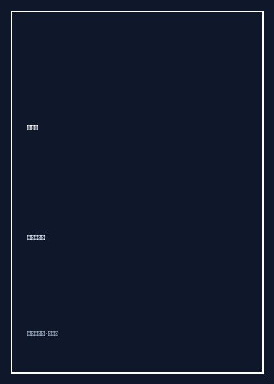

快活馋

8.1
★★★★☆
豆瓣评分 · 2,340 人评价
未标记阅读状态
知名画家高军（风和日丽）的市井美食神作，以纯正京味白描与幽默笔触，勾勒胡同巷尾凡夫俗子大口吃肉的痛快与温情。
总体观点
高军（网名“风和日丽”）既是当代实力派画家，也是深谙民间饮食野趣的杂家老饕。《快活馋》是他关于吃喝人情最脍炙人口的随笔集。全书没有米其林餐厅的高冷炫技与昂贵鲍翅的做作堆砌，作者将视线深情平视投向北方胡同、市集大棚、路边摊档与寻常人家的简陋后厨。
作者以极具现场感的市井语言与画家独有的视觉敏锐，描绘了炸灌肠、卤煮火烧、芝麻酱烧饼、羊霜肠、扁豆焖面与大葱蘸酱等最接地气的草根风味。在作者笔下，“馋”不是丢人的生理贪欲，而是平头百姓在苦涩艰辛的琐碎生活里对抗疲惫、确认活着的最饱满生命力。吃一碗热气腾腾的烂肉面、喝二两烧酒，那份快活胜过神仙。
核心观点
-
1. 快活馋：草根百姓在贫寒日子里最踏实的幸福锚桩
无论白天受了多少窝囊气、干了多累的脏活，只要晚上一碗热乎乎的肉汤下肚，生活的精气神就重新立住了。
老工人下班路过胡同小摊，花两毛钱买一个刚出炉烫手的芝麻烧饼夹上一块炖烂的猪头肉，一口咬下油脂四溢，满脸沟壑瞬间舒展为满足的笑容。 -
2. 野性小吃的精髓在“脏摊儿”里热腾腾的粗粝镬气
许多传统小吃一旦搬入豪华商场玻璃柜台便失去了灵魂，它唯有在烟雾缭绕的铁板与老汤大锅前才能散发出最野性的诱惑力。
细致描绘庙会庙市上炸灌肠的场景：白猪油在黑铁铛里滋滋作响，炸到外焦里嫩的粉肠捞出趁热浇上一勺蒜汁盐水，入口脆响咯吱、蒜香冲脑。 -
3. 家常便饭里的岁月温存胜过一切名贵宴席
最耐人寻味的滋味永远是母亲在铁锅前焖出的一锅家常面，那是融入骨血的童年味觉胎记。
夏天傍晚在院子老槐树下吃一碗扁豆焖面，就着新剥的生蒜瓣，呼哧呼哧吃得满头大汗，风吹树叶沙沙作响，是人间至美良辰。 -
4. 吃相看人品：大口吃喝间的江湖义气与坦荡
真正痛快的朋友从不在饭桌上扭捏作态，能蹲在马路牙子上大口啃肉骨头、碰碗干酒的人，胸中大多没有阴损算计。
记叙老画友们在简陋画室熬一大盆酸菜白肉血肠，众人挽起袖子围炉争食、举杯高论艺术，赤诚相见毫无名利客套。 -
5. 老规矩的消逝与平民饮食记忆的纸上抢救
随着城市改造与工业预制菜泛滥，许多曾经活色生香的手工小吃行当正在无声湮灭，用文字定格是抢救非物质文化遗产。
详实考证清末民初“羊霜肠”与“豆汁儿”挑子的叫卖声腔、熬制手法与食客互动，为正在消失的胡同市井保留一份带体温的活化石档案。
树状思维导图
全书思维导图 · 知识脉络树
已复制思维导图大纲到剪贴板！
全书结构
-
第一辑 街头巷尾的野味小吃：胡同烟火画卷
巡礼北京老城区的地道小吃，详述爆肚、卤煮、炒肝、灌肠与面茶的制作门道与吃法讲究。
精读《爆肚的脆劲儿》《卤煮那一锅老汤》，在热气腾腾的大肠肺头中领会市井底层劳力最实在的能量补给。 -
第二辑 家常便饭的岁月深情：一蔬一饭里的真味
回忆筒子楼与四合院里的居家伙食，涵盖炸酱面、焖面、大葱蘸酱与冬储大白菜的四季温饱。
细品《夏天那一碗炸酱面》，从菜码（黄瓜丝、心儿里美萝卜丝、豆芽菜）到六必居干黄酱的炸制火候，如数家珍。 -
第三辑 走南闯北的食色见闻：江湖行脚老饕
记录作者游历江南水乡、淮安运河与西北戈壁的觅食奇遇，跨越地域对比民间风味异同。
在《淮安软兜长鱼》《西北手抓羊肉》中体验异乡草根宴席的大开大合，展现中华大地丰富多元的民间生机。 -
第四辑 馋人说馋的世相百态：吃出来的凡俗逍遥
由食物升华为对市井民俗、老辈人处世智慧与生命从容态度的哲学幽默随笔，完成全书点睛。
通读收官篇《快活馋》，在老北京胡同夕阳余晖与烤红薯的香甜微烟中体悟凡俗日子里不可剥夺的自在快活。